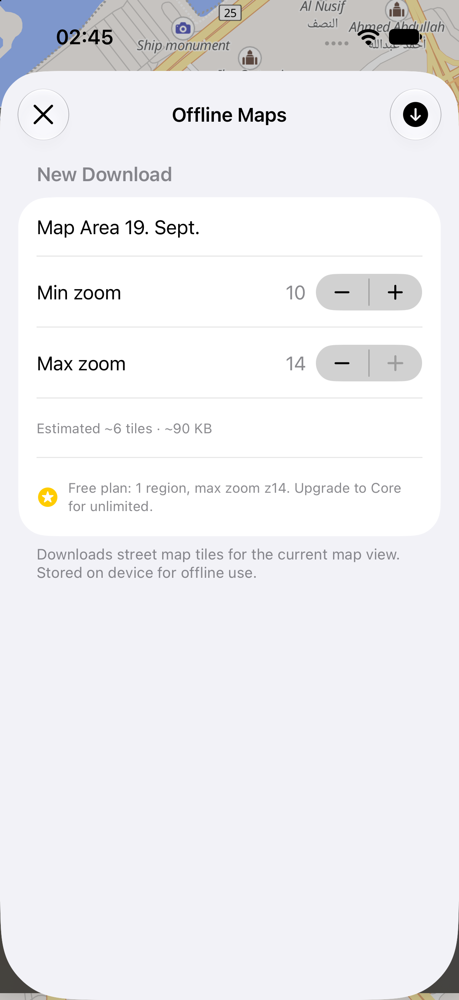

This separate viewer reads the actual imported image and original file saved in this browser. It does not use online basemap tiles or GPS. A raw image has no verified coordinates.

Reading local map…